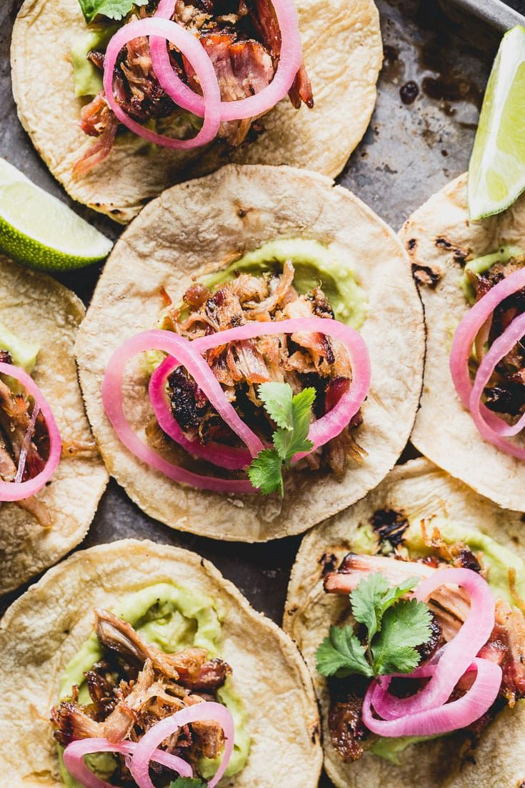
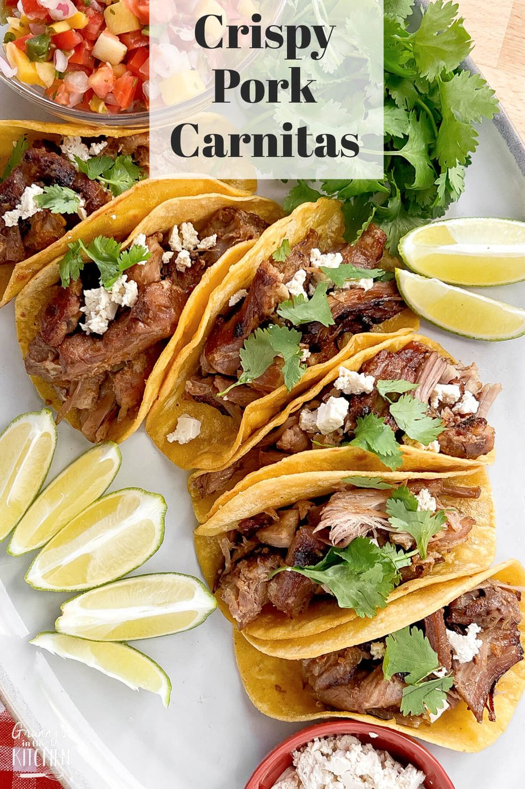
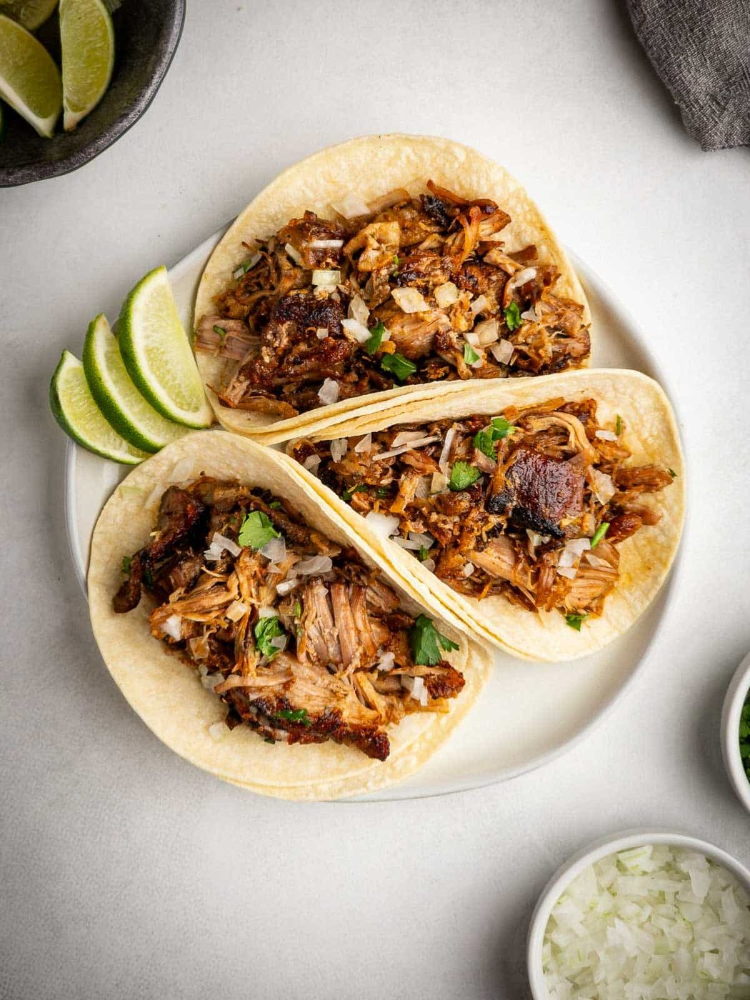
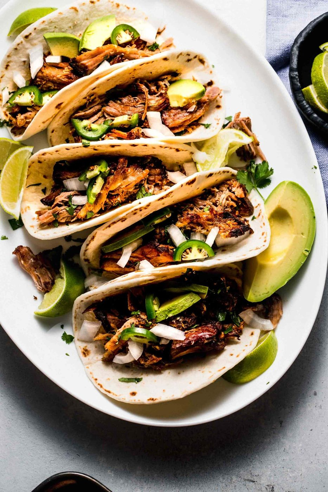
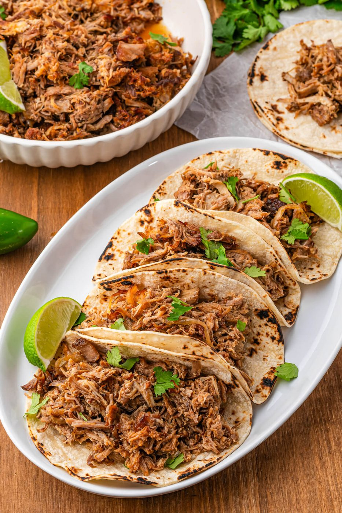
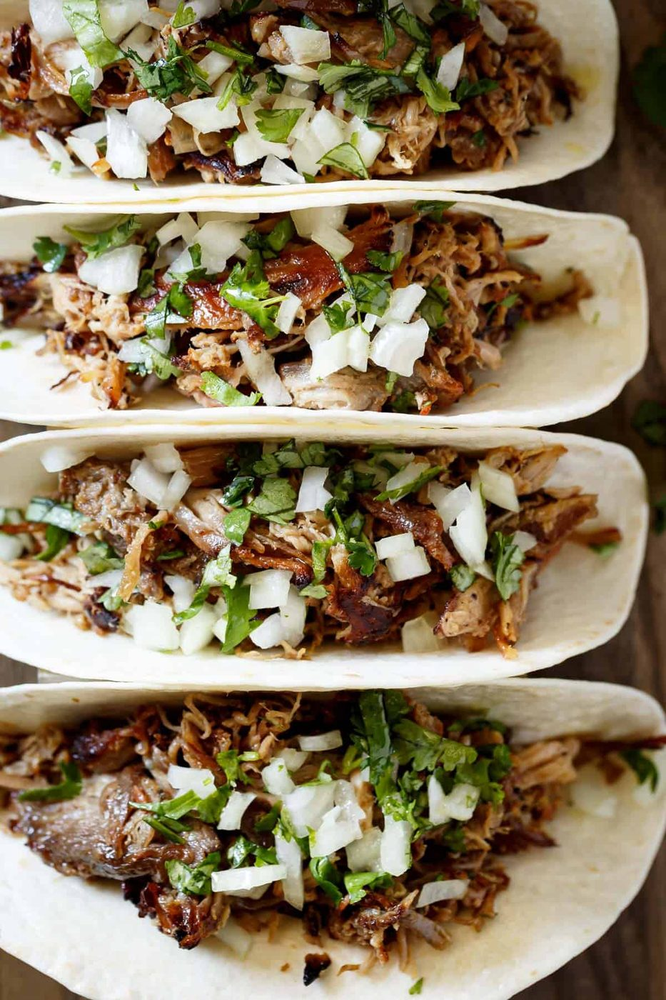
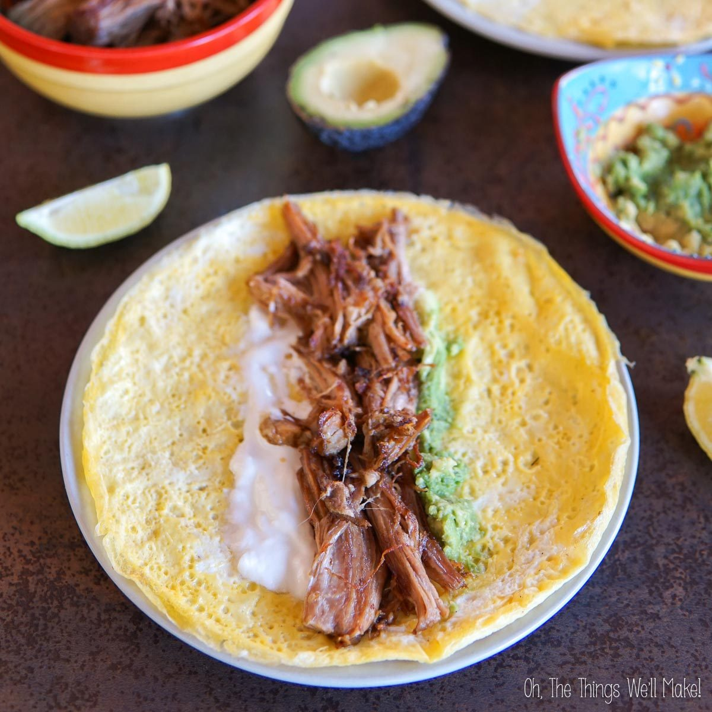

← Street Food
Carnitas
Pork confit, Michoacán style — simmered in its own fat until shreddable, then crisped under the broiler until it crackles.
Pork confit, Michoacán style — simmered in its own fat until shreddable, then crisped under the broiler until it crackles.
Carnitas ('little meats') is Michoacán's gift to the taco universe: pork shoulder simmered low in lard — traditionally just its own rendered fat — with orange, bay and a suspicious amount of patience. The meat emerges fall-apart tender, then gets crisped hard at the end for that essential duality: silk inside, crackle outside.
The home version is almost embarrassingly easy. Everything goes in one pot: cubed shoulder, water, a splash of oil, orange peel, onion, garlic, bay. Simmer for three hours while the water cooks off and the fat renders — the meat fries in its own confit for the final phase. Finish under the broiler or in a hot skillet for the crackle. The orange is not optional; it is the flavor thread running through every version.
serves 8 — tick items off as you shop; it saves as you go
Pork, water, fat, orange, onion, garlic, bay, oregano, cumin, salt. Bring to a simmer. That's it — the technique is the time, not the moves.
Simmer uncovered on the lowest flame, stirring occasionally. The water evaporates, the fat renders out, and by hour two the meat is boiling in its own lard. Skim nothing. This is correct confit behavior.
Around hour 2.5-3 the liquid is gone and the meat starts frying — it sizzles instead of bubbling. Stir more often now so the bottom crisps evenly and nothing catches. The edges brown, the cubes firm up.
Either shred for tacos or keep the chunks and crisp them harder under the broiler for 5 minutes. Both are traditional; the broiler route gives more crackle per square centimeter.
Warm tortillas directly over a flame, fill with carnitas, cilantro, raw white onion, salsa verde, lime. Eat two immediately. The third one is 'quality control'.







Images are web-sourced via image search and self-hosted. Original sources:
https://z-cdn.chatglm.cn/image-search-mcp/images-ppt/073e46a03ea2.jpghttps://z-cdn.chatglm.cn/image-search-mcp/images-ppt/0b529600ba6e.jpghttps://z-cdn.chatglm.cn/image-search-mcp/images-ppt/400e9248b009.jpghttps://z-cdn.chatglm.cn/image-search-mcp/images-ppt/69b3ee57f474.jpghttps://z-cdn.chatglm.cn/image-search-mcp/images-ppt/7c1b39d7bfc5.jpghttps://z-cdn.chatglm.cn/image-search-mcp/images-ppt/7c643037ac40.jpghttps://z-cdn.chatglm.cn/image-search-mcp/images-ppt/d1c1f3ff2064.jpgVerified working videos — click a card to load the embed.


Powered by GitHub Issues — the backup kitchen. One issue per recipe; your comment lands in the repo.